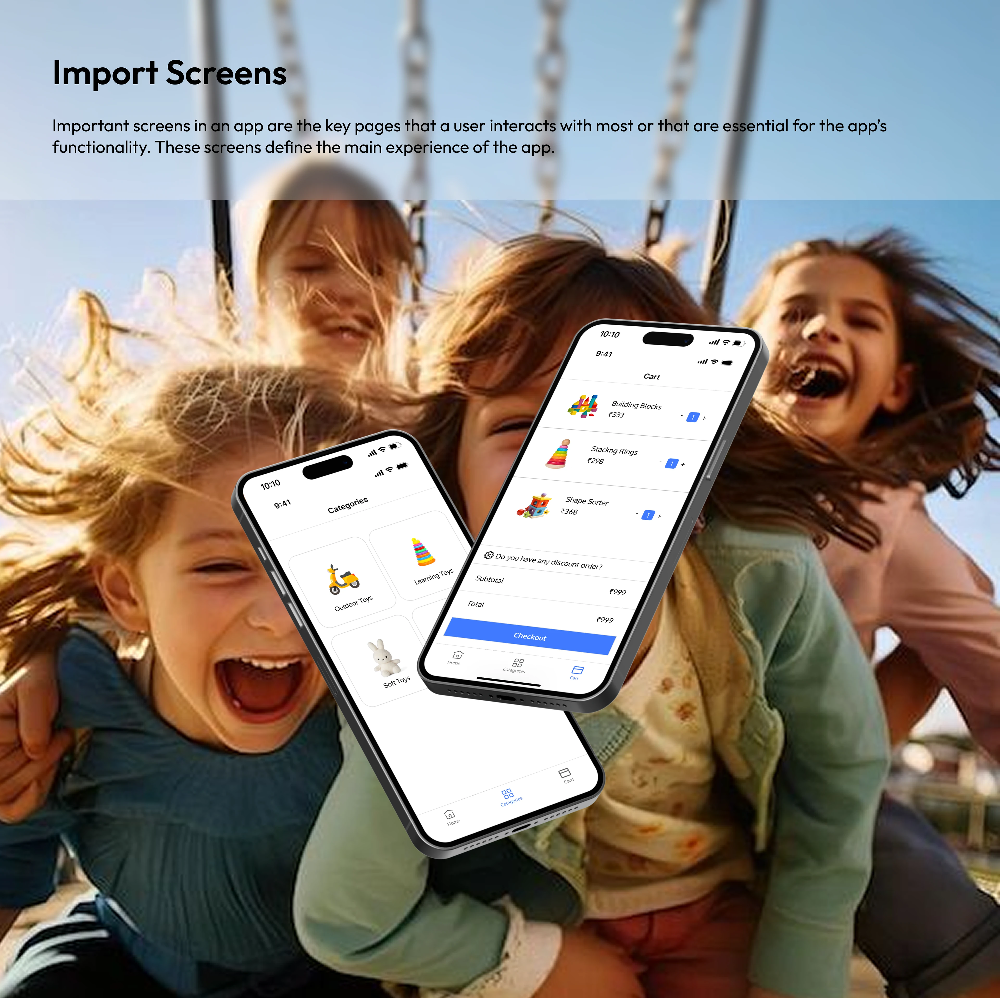
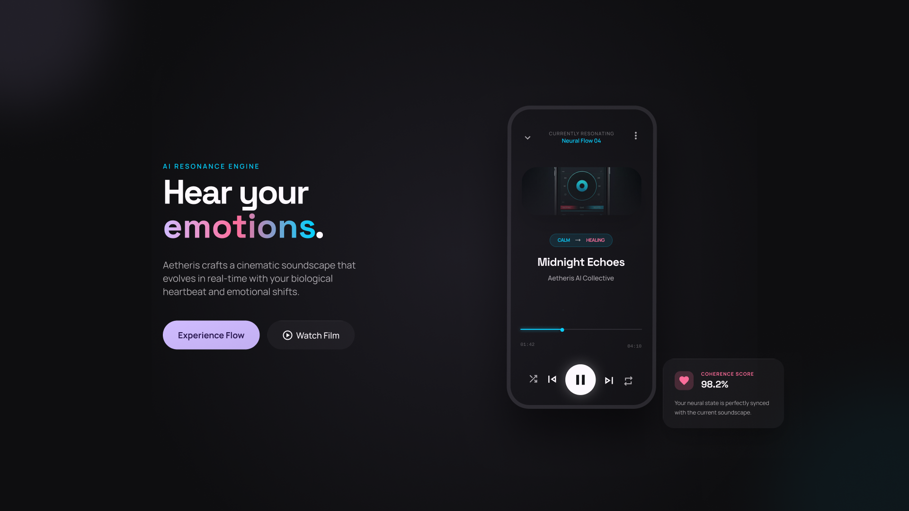

AnkitaPattajoshi
I'm a UI/UX and product designer in Bengaluru. I design clear, accessible app and web experiences, and the graphics and content around them.
Selected work

Rental Toy House
Parents often struggle with buying new toys for their children, as kids can quickly lose interest in toys they already have. This can lead to unnecessary spending, unused toys, and clutter at home.
Read the case study
MoodSync, emotion-based music
A mobile concept that reads your mood and builds the playlist, so you never scroll a menu to decide what to hear.
Read the case study
Pitch deck design
Slides that explain a complex idea clearly, with a consistent layout, diagrams and visual hierarchy.
See the slidesExperience
Freelance Graphic Designer
- Conceptualised and designed a complete investor pitch deck from concept to final delivery, translating complex business narratives into a cohesive and engaging visual story.
- Developed four detailed 3D isometric illustrations to visualise key product and process concepts, maintaining consistency in composition, depth, colour, and visual language throughout the deck.
- Designed a large-scale, highly detailed 3D isometric hero illustration as the deck’s centerpiece, combining complex visual elements into a clear and compelling system overview.
- Applied advanced composition, visual hierarchy, and rendering techniques to create presentation-ready graphics aligned with the client’s creative direction and brand requirements.
Freelance Graphic Designer
- Designed posters, flyers, brochures, business cards, and promotional materials tailored to individual client requirements and brand guidelines.
- Created logos and complete visual identities for individuals, startups, and small businesses, establishing cohesive and recognisable brand systems.
- Developed social media creatives and campaign assets designed to improve brand visibility, communication, and audience engagement.
- Managed social media content creation and scheduling, maintaining consistent visual quality and brand communication across platforms.
- Adapted creative concepts across multiple formats and deliverables while ensuring consistency in typography, colour, layout, and overall brand identity.
Graphic Designer
- Conducted content and competitor research to identify relevant trends, audience interests, and market opportunities, supporting social media and content strategy.
- Designed social media graphics, banners, promotional creatives, and marketing collateral using Figma, Adobe Photoshop, and Adobe Illustrator.
- Created short-form visual content including reels, stories, and carousel posts to support audience engagement and brand growth.
- Managed and scheduled content across Instagram, LinkedIn, and Facebook, maintaining a consistent publishing cadence and visual brand language.
- Collaborated with the marketing team to develop and execute content calendars, ensuring creative assets were delivered on schedule and aligned with campaign objectives.
- Reviewed social media performance and engagement metrics to identify content trends and inform future creative and optimisation strategies.
Product Designer (UX/UI)
- Led a cross-functional team of three in redesigning the mobile product experience, collaborating across design and development to deliver a responsive experience for iOS and Android.
- Redesigned checkout and product decision flows, contributing to a 30% increase in conversion rate within the first month following launch.
- Improved application performance by reducing page load time by 40% through image optimisation and code-splitting techniques.
- Built a scalable design system covering typography, spacing, colour, and reusable UI components, improving interface consistency and reducing design iteration effort.
- Applied accessibility and usability principles across key user flows to improve navigation clarity and overall user experience.
UX/UI Designer
- Designed mobile interfaces for iOS and Android, following platform-specific UI guidelines and established usability principles.
- Developed cohesive visual systems using typography, colour, iconography, spacing, and layout principles to support scalable product experiences.
- Optimised screen layouts and interaction patterns to improve usability, accessibility, navigation clarity, and user engagement.
- Collaborated on user flows and interface structures to create intuitive and consistent mobile experiences across key product journeys.
UX/UI Designer
- Led the redesign of responsive web interfaces using a scalable, component-based design approach to support future product and feature expansion.
- Simplified information architecture, page layouts, and navigation flows to create clearer and more intuitive user journeys.
- Established consistent typography, colour, spacing, and visual patterns across web pages to strengthen overall brand consistency.
- Designed responsive interfaces with a focus on usability, accessibility, visual hierarchy, and cross-device consistency.
Designer with a developer's mindset
I studied computer applications (BCA and MCA) before moving into design. That background helps me design things that can actually be built, and I enjoy working closely with developers.
MCA, Sambalpur University, 2021–2023
BCA, Sambalpur University, 2018–2021
UX/UI Design Bootcamp, DesignBoat UI/UX School, 2025
UX research
User research, journey mapping, user flows, information architecture, usability testing.
UI design
Wireframes, prototypes, interaction design, accessibility, mobile-first responsive layouts.
Design systems
Typography, colour systems, iconography, components and design tokens.
Graphic & brand
Brand identity, visual storytelling, social media graphics, reels and carousels.
Tools
Figma, FigJam, ProtoPie, Jitter, Adobe XD, Photoshop, Illustrator, Canva, Affinity Designer.
Code basics
React, Tailwind CSS and responsive HTML/CSS for smooth handoff.
Let's work together
ankitapattajoshi3@gmail.com+91 79910 32148 · Bengaluru, India · Open to UI/UX, product and graphic design roles